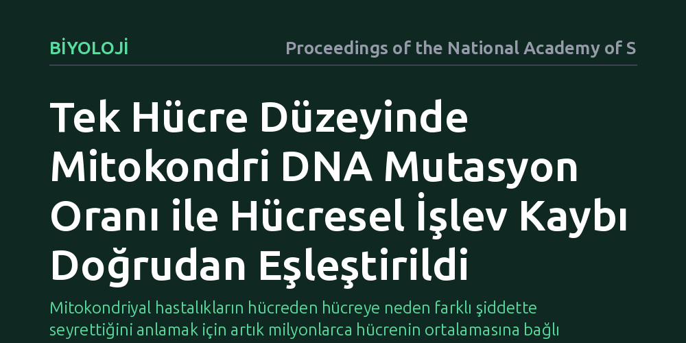

BIYOLOJI · Proceedings of the National Academy of Sciences · 2026-09-12
Araştırmacılar, tek tek hücrelerdeki mitokondri DNA mutasyonlarını aynı hücrenin işlevsel enerji kapasitesiyle doğrudan eşleştiren yeni bir yöntem geliştirdi. Bu teknik, hücreler arasındaki genetik çeşitliliğin mitokondri zar potansiyeli üzerindeki etkilerini tek hücre çözünürlüğünde ortaya koyuyor.
Mitokondriyal hastalıkların hücreden hücreye neden farklı şiddette seyrettiğini anlamak için artık milyonlarca hücrenin ortalamasına bağlı kalmak gerekmiyor.

Hücrelerimizin enerji ihtiyacını karşılayan mitokondriler, çekirdek dışındaki kendilerine ait DNA moleküllerini taşır. Sağlıklı bir insan hücresinde yüzlerce mitokondri ve bunların içinde binlerce mitokondriyal DNA kopyası yer alır. Zaman zaman bu kopyaların bir kısmında genetik mutasyonlar meydana gelir. Aynı hücre içerisinde hem sağlıklı hem de hasarlı DNA kopyalarının bir arada bulunması durumu, biyolojide heteroplazmi olarak adlandırılır. Bir hücrenin yaşamını normal biçimde sürdürebilmesi ya da enerji üretemez hale gelip çökmesi, çoğunlukla bu hasarlı kopyaların hücre içindeki oranına bağlıdır.
Bugüne dek mitokondriyal hastalıkları incelerken karşılaşılan en temel zorluk, mevcut genetik dizileme yöntemlerinin milyonlarca hücreyi aynı anda parçalayarak toplu bir ortalama sunmasıydı. Oysa aynı dokunun içinde yan yana duran iki hücreden biri tamamen sağlıklı bir enerji dengesine sahipken hemen yanındaki komşusu yüksek mutasyon yükü nedeniyle işlevini yitirmiş olabilir. Milyonlarca hücrenin ortalamasını almak, bu kritik farkları görünmez kılıyordu ve hangi mutasyon seviyesinin hücresel düzeyde iflasa yol açtığını belirlemeyi imkânsızlaştırıyordu.
Mitokondrilerin fiziksel sağlığı ile genetik yapısını tek hücrede birleştirmek uzun süredir teknik bir açmaz olarak duruyordu. Bir mitokondrinin ne kadar iyi çalıştığını, yani zar potansiyelini veya enerji üretim kapasitesini anlayabilmek için hücrenin canlı ve fizyolojik olarak aktif olması şarttır. Buna karşılık DNA dizilemesi yapabilmek için hücre zarının parçalanması ve genetik materyalin serbest bırakılması gerekir. Hücreyi canlıyken ölçüp aynı hücrenin parçalanıp DNA'sının okunmasını sağlamak son derece hassas bir mikro mühendislik gerektiriyordu.
Araştırmacılar bu engeli aşmak için iki aşamalı entegre bir yöntem tasarladı. İlk adımda canlı hücreler, mitokondri zar potansiyeline ve mitokondri kütlesine duyarlı özel floresan boyalarla işaretlendi ve hücrelerin yaydığı ışık sinyalleri tek hücre çözünürlüğünde kaydedildi. Hemen ardından, her bir hücre fiziksel olarak tek tek mikro bölmelere ayrıştırıldı ve hücre zarları kontrollü şekilde eritilerek mitokondri DNA'ları hedeflenmiş derin dizileme teknolojisiyle analiz edildi.
Geliştirilen yöntem sayesinde, bireysel bir hücrenin taşıdığı hasarlı mitokondri DNA yüzdesi ile o hücrenin mitokondri zar potansiyeli ilk kez doğrudan eşleştirildi. Elde edilen bulgular, tek bir hücre popülasyonu içinde mutasyon oranının hücreden hücreye sanılandan çok daha geniş bir yelpazede dağıldığını somutlaştırdı.
Klasik doku analizlerinde ortalama mutasyon oranı makul seviyelerde görünen bir hücre grubunun içinde, gerçekte bazı hücrelerin neredeyse hiç mutasyon taşımadığı, bazılarının ise kritik eşiği aşarak mitokondri zar potansiyelini kaybettiği tespit edildi. Bu durum, hücresel düzeydeki işlev kaybının doğrusal bir düşüşten ziyade belirli bir eşik değer aşıldığında aniden devreye girdiğini ve hücreler arasındaki heterojenliğin hastalığın gidişatını belirleyen ana unsur olduğunu gösterdi.
Bu bulgular, mitokondriyal hastalıkların klinik belirtilerinin neden bireyden bireye ve dokudan dokuya bu kadar büyük farklılıklar gösterdiğine dair önemli bir biyolojik açıklama getiriyor. Hücreler arasındaki genetik ve işlevsel çeşitliliğin doğrudan ölçülebilmesi, yaşlanma ve metabolik bozukluklar gibi mitokondri hasarıyla ilişkili süreçlerin çok daha hassas biçimde takip edilmesine zemin hazırlıyor.
Bununla birlikte çalışmanın sınırlarını göz ardı etmemek gerekir. Geliştirilen yaklaşım şu aşamada laboratuvar koşullarında kontrollü olarak yürütülen bir temel bilim yöntemidir. Yöntemin klinik tanıda veya doğrudan hasta biyopsilerinde rutin hale gelebilmesi için hücre hazırlık adımlarının basitleştirilmesi ve daha geniş örneklem gruplarında tekrarlanması gerekmektedir.